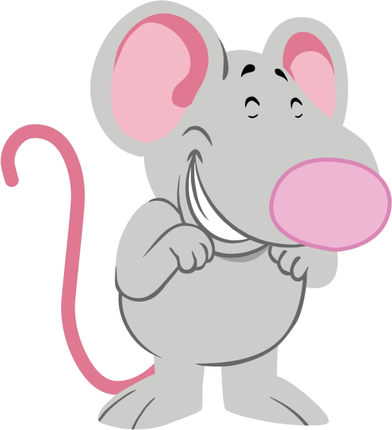
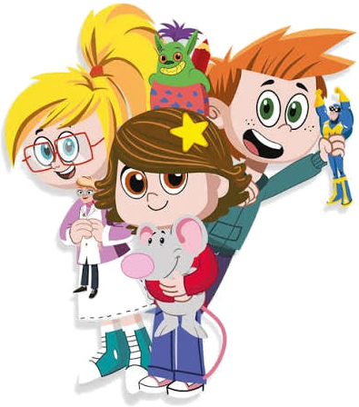

Começando a demonstrar
O aluno inicia a habilidade com apoio, modelagem, repetição, recursos visuais e mediação direta.
Preencha os dados do aluno e marque os indicadores por disciplina. O report card será atualizado automaticamente. Para salvar, clique em Salvar / Imprimir PDF e escolha “Salvar como PDF”.
Antes de salvar: selecione “Salvar como PDF”, marque “gráficos/fundos da página” e desmarque “cabeçalhos e rodapés”.
Sugestão de nome do arquivo: Santo-Anjo_Year1_Term1_Cecilia-Franco_Report-Card.pdf


Term 1 — um retrato cuidadoso da rotina bilíngue, identidade, sala de aula, números, cores, formas, seres vivos e natureza próxima.
O aluno inicia a habilidade com apoio, modelagem, repetição, recursos visuais e mediação direta.
O aluno demonstra a habilidade em situações conhecidas, com apoio visual, sentence frames ou orientação do professor.
O aluno demonstra a habilidade com mais frequência, confiança e autonomia dentro das propostas do Term 1.

| Observed area | Selected development stage |
|---|
